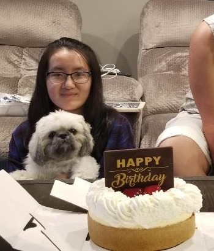

14-years-old
Not Flexible
Comparisons
Uncertainty about future
Taking the easy path

18-years-old
Go with the flow, procrastinate.
Less worried about future
More confident
What Do I Still Need to Improve On?
Perfectionism
Time-management
Speaking and Presenting
Better Study Habits